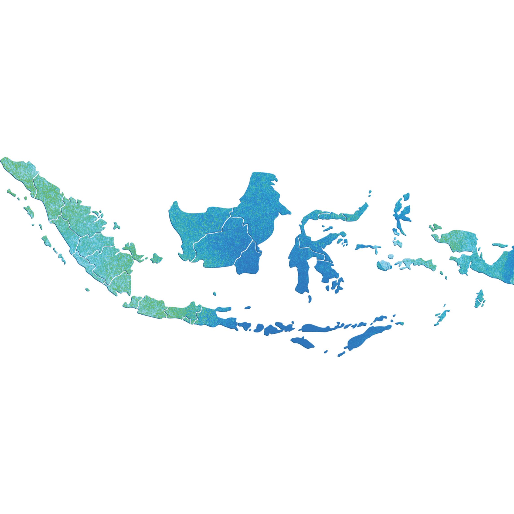

Home
Profile
Map +
Peta Kabupaten Jeneponto
Peta Penggunaan Lahan Kabupaten Jeneponto
Peta Kemiringan Lereng Kabupaten Jeneponto
Peta Ketinggian Tempat Kabupaten Jeneponto
Peta Curah Hujan Kabupaten Jeneponto
Peta Sebaran Buah Siwalan Kabupaten Jeneponto
Contact
Sign in
Sign up

Hi
, Welcome To WEBGIS JENEPONTO
Please Login First To Retrieve The Required Data
Email/Username
Password
Login
Forgot Password
Learn More
© 2023.
Dewi Pratiwi Sasmito
All Right Reserved.